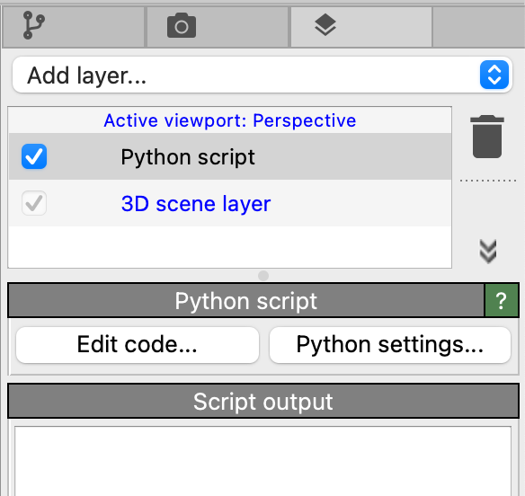
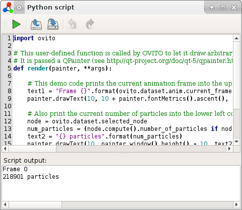

Python script viewport layer pro
{kind=link}
This type of viewport layer lets you write your own Python script function to paint arbitrary text or graphics on top of 3d visualizations rendered by OVITO. This makes it possible to enrich figures or movies with additional information, e.g., scale bars, data plots, or diagrams.
{kind=link}
The Edit code… button opens a code editor, where you enter the source code for the user-defined viewport layer. It will be invoked by OVITO each time the viewport is repainted or whenever an image or movie frame is being rendered. Your Python script has full access to OVITO’s data model and can access viewport properties, camera and animation settings, and the data pipeline results to dynamically produce annotations or graphics.
The Python settings… button opens the Python Settings dialog.
For more information, please see User-defined viewport layers in the OVITO Python documentation.
Examples
This page provides several code examples demonstrating how to write custom viewport layers in Python:
See also
ovito.vis.ViewportOverlayInterface(Python API)ovito.vis.PythonViewportOverlay(Python API)